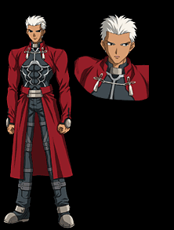

Арчер (яп. アーチャー)

Утверждает, что не помнит своего настоящего имени. На самом деле он — слуга из будущего, Эмия Широ. Спустя несколько лет после окончания пятой войны святого Грааля, Широ решает стать слугой, в обмен на спасение людей от катастрофы. Однако, первый же мастер Эмии использует командное заклинание и приказывает тому убивать людей для повышения собственных сил. Вспомнив слова своего приемного отца «Спасение одного означает гибель другого», он разочаровывается в своих идеалах и хочет быть призван в пятую войну в качестве слуги, чтобы убить самого себя из прошлого. Так как Арчер — это тот же Эмия Широ, он обладает всеми прежними своими способностями, причем значительно улучшенными. В частности, он может создавать вместо обычных копий оружия многократно усиленные, но рассчитанные на один-единственный удар. Кроме того, он мастерски владеет заклинанием «Зеркала Души» — Unlimited Blade Works. UBW — это замкнутое пространство, в котором навыки Арчера
улучшаются, позволяя создавать копии артефактов, по мощности почти не уступающие оригиналам. Собственых же Небесных Фантазмов у него нет, только те, которые он видел на вооружении у других слуг.
Назад к Гирою
Назад к меню Гироев